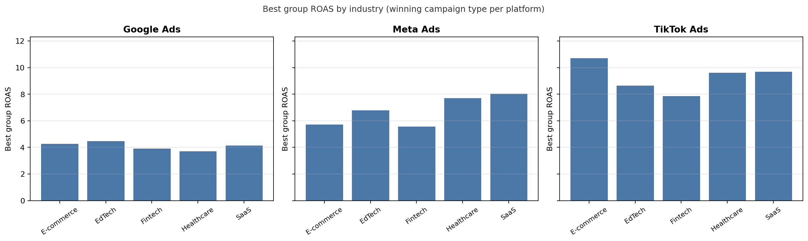
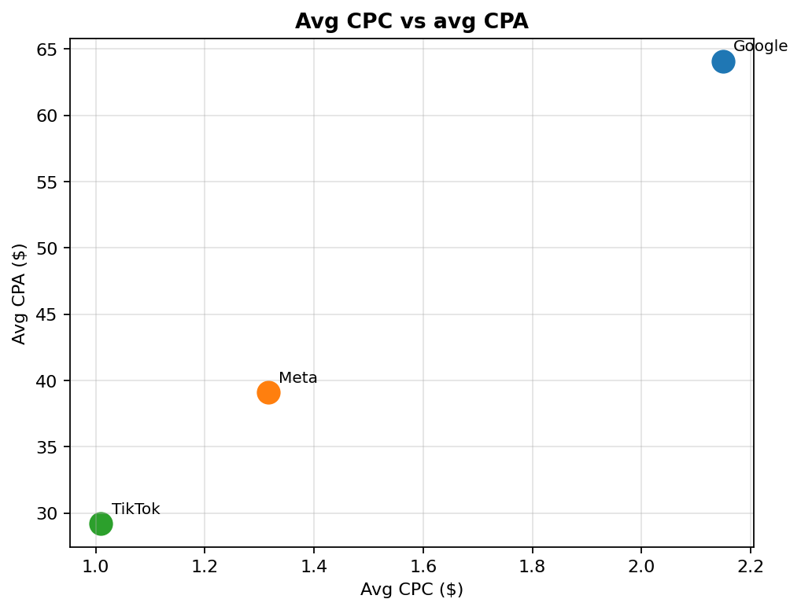
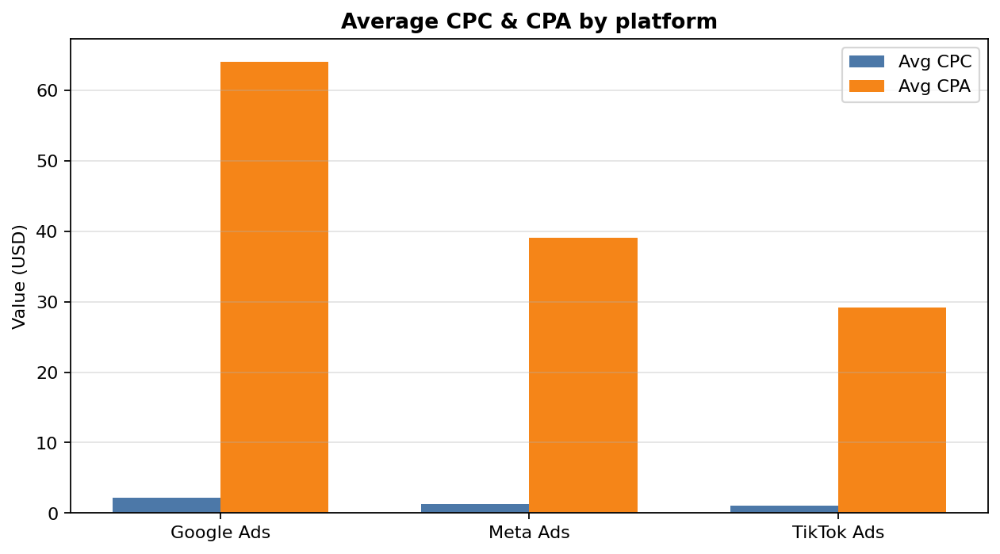

Problem
The dataset stitches together performance from three big ad platforms so you can compare them on something like the same playing field — but the raw export is still a lot of rows and columns, and “which channel is actually winning?” doesn’t answer itself. You need clear cuts: how spend lines up with revenue as budgets scale, where revenue per dollar spent starts to slide, how CPC and CPA differ by platform, and which campaign types carry the best group-level ROAS in each industry.
In this slice of the work, TikTok came out looking the strongest commercially: it sits highest on ROAS in most industries in the bar breakdowns, and the spend–revenue curves back up that it’s often the most lucrative place to put incremental budget — not the cheapest on CPA alone, but strong on return for the dollars you put in.
Goal
Keep a repeatable path from raw extract to cleaned aggregates to a single JSON bundle the dashboard loads at runtime, so the same definitions used in notebooks show up unchanged in the UI.
Data & pipeline
Raw inputs under data/raw/; cleaned tables under data/processed/. Notebooks in
notebooks/:
preprocessing-1.ipynb— cleaning and the processed performance CSVspend-v-revenue-3.ipynb— spend vs revenue curves by quantile binplatform-efficiency-2.ipynb— average CPC and CPA by platformcampaign-industry-4.ipynb— best group ROAS per platform × industry (winning campaign type)
The dashboard reads dashboard/data.json, built with python3 scripts/build_dashboard_data.py.
Charts
Ten quantile bins per platform (q=10).
Best group ROAS by industry (per platform)
Group ROAS = sum(revenue) / sum(ad_spend) by platform × industry × campaign type; bars are the
winning campaign type per industry, shared y-scale across Google, Meta, and TikTok.

Spend vs revenue and revenue per $1 spend
Bin means of ad_spend vs mean revenue (left) and vs mean_revenue / mean_spend (right);
lower curves on the right show saturation.
Avg CPC vs avg CPA
One point per platform from processed aggregates.

Average CPC & CPA by platform
Platforms sorted by average CPA (high to low). Dark bars = Avg CPC, warm bars = Avg CPA.
